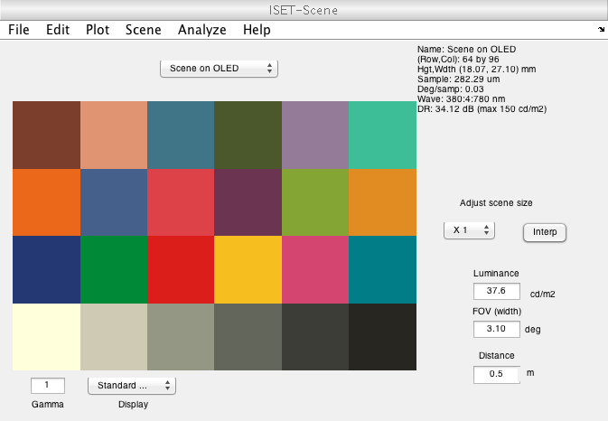
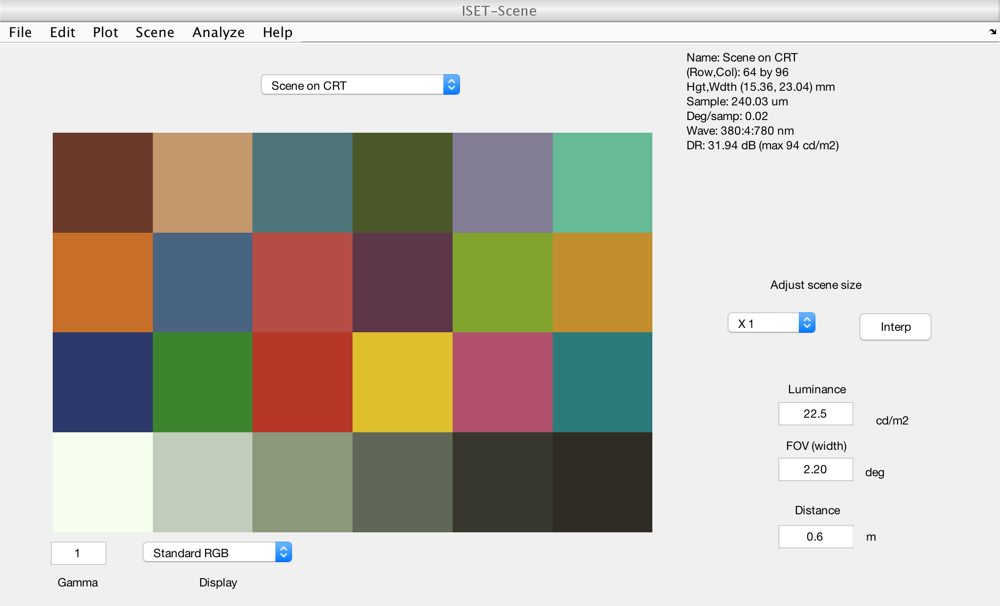
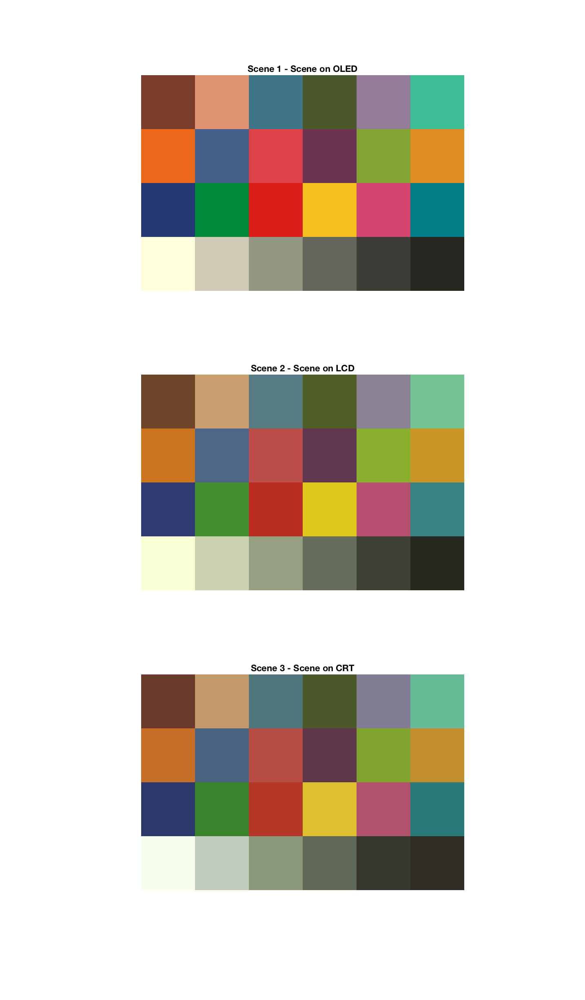
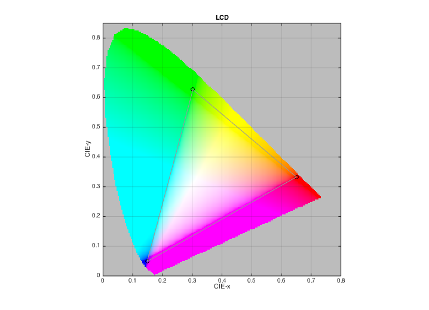

t_sceneRGB2Radiance
Tutorial for how to generate ISET scene for any given bitmap
This tutorial will including following part 1. Generate ISET scene from RGB file 2. Adjust the illumimant from the scene 3. Do it for a second OLED.
(HJ) VISTASOFT Team 2013
Contents
Init
s_initISET;
Create scene from file
Init data file path
imgFileName = 'macbeth.tif'; dispOLEDFile = 'OLED-Sony.mat'; dispLCDFile = 'LCD-Apple.mat'; dispCRTFile = 'CRT-Dell.mat'; % Check existence if ~exist(imgFileName,'file'), error('Image file not found'); end if ~exist(dispOLEDFile,'file'), error('OLED Display file not found.'); end if ~exist(dispLCDFile,'file'), error('LCDDisplay file not found.'); end if ~exist(dispCRTFile,'file'), error('CRTDisplay file not found.'); end
Create scene from file
Scene on OLED The illuminant is set to be the white point of the monitor
sceneA = sceneFromFile(imgFileName,'rgb',[],dispOLEDFile); sceneA = sceneSet(sceneA,'name','Scene on OLED'); vcAddAndSelectObject(sceneA); sceneWindow;
[vcReadImage] Assuming 8bit image and 10 bit LUT
Scene on LCD
sceneB = sceneFromFile(imgFileName,'rgb',[],dispLCDFile); sceneB = sceneSet(sceneB,'name','Scene on LCD'); vcAddAndSelectObject('scene',sceneB); sceneWindow;
[vcReadImage] Assuming 8bit image and 10 bit LUT
Scene on CRT
sceneC = sceneFromFile(imgFileName,'rgb',[],dispCRTFile); sceneC = sceneSet(sceneC,'name','Scene on CRT'); vcAddAndSelectObject('scene',sceneC); sceneWindow;
Compare the three images
imageMultiview('scene', 1:3, true);
 Compare the gamuts of the three monitors
d = displayCreate(dispOLEDFile); displayPlot(d,'gamut'); title('OLED') d = displayCreate(dispLCDFile); displayPlot(d,'gamut'); title('LCD') d = displayCreate(dispCRTFile); displayPlot(d,'gamut'); title('CRT')